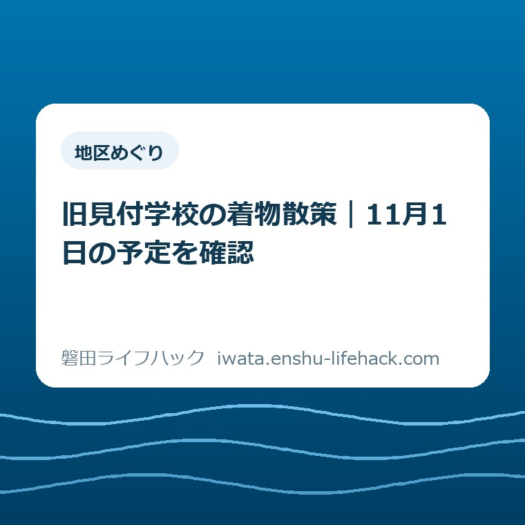

地区めぐり
旧見付学校の着物散策｜11月1日の予定を確認

この記事の要点
Q. 11月1日に申し込まず参加できますか？
A. 事前申込制で、締切は10月13日です。追加受付は未確認です。申込済みの方は参加案内を確認し、未申込の方は旧見付学校に受付状況をお尋ねください。
家族の外出は、行き先を決めるだけでは終わらない
家族で出かける日を決めるには、仕事や学校、移動、食事など、いくつもの予定を合わせる必要があります。子どもの参加する催しであれば、本人の気持ちを聞き、保護者が付き添えるかも考えます。公式案内を探す時間も、その準備の一部です。
2026年11月1日の午前に、旧見付学校に関係する着物の企画が予定されています。磐田市が2026年3月18日に公表した年間の取材予定表には、「旧見付学校かすりの着物で町並み散策」と記載されています。会場は旧見付学校、時間は午前中、担当は旧見付学校です。
ただし、この予定表は日程の一覧です。それだけを見て、今から申し込めると受け取ることはできません。見付宿たのしい文化展実行委員会の公式案内では、「かすりの着物でまち巡り」は11月1日の午前に実施し、事前申込が必要で、10月13日が締切と示されています。2026年10月30日に確認した時点で、その締切は過ぎています。
両資料は企画名の表記が少し異なります。市の予定表は旧見付学校の散策を、実行委員会は文化展の企画を案内しています。参加するご本人やご家族は、申込時に受け取った案内の企画名と日付を確認し、迷う場合は学校に尋ねてください。

締切と、追加受付の有無は別の情報
主催者が示した10月13日という締切は、申込の基準日として確認できる事実です。一方、その後に空きが出た場合の扱いや、追加受付の実施は、確認した主催者案内からは分かりません。追加受付がないとも、あるとも決めつけないことが大切です。
まだ申し込んでいない場合は、会場へ直接行けば着物を着られると考えて予定を組まないでください。今日できる一歩は、旧見付学校へ電話し、「11月1日のかすりの着物での町並み散策について、追加受付はありますか」と聞くことです。電話番号は0538-32-4511です。
受付がない場合は、その回答を受け止めて別の過ごし方を考えます。子どもに着物を着せる約束をしてから確認するより、先に受付状況を確かめておけば、家族の予定を変える負担を減らせます。これは主催者の運営方法に対する評価ではなく、家庭でできる準備の話です。

申し込んだ家族は、案内を手元に置く
申し込んだご家族は、まず自分たちが受け取った案内を見直してください。市の年間予定表の「午前中」は、集合時刻や着付けの順番を示すものではありません。開始時刻、集合場所、着替えや持ち物などは、個別に受け取った連絡を優先して確認します。
家族の予定表には、企画の名前、日付、集合時刻、場所、誰が付き添うかを書いておくと、別の催しと混同しにくくなります。申込内容を確認できるメールや書類があるなら、出かける前に見られる場所に置きます。この記事は個々の申込が受理されたかを確認できません。
出発までに分からない項目が残った場合は、学校に企画名と参加者の申込状況を伝えて尋ねてください。受付状況や参加条件は人によって異なり、当日の案内が変わることもあります。電話の前に、聞きたいことを一つか二つ書き出すと、家族内でも回答を共有しやすくなります。
移動は、通常の施設情報と当日の案内を分ける
旧見付学校の所在地は磐田市見付2452-1です。市の施設ガイドには、通常の利用時間は火曜から日曜の午前9時から午後4時30分、駐車場は10台と記載されています。イベント当日の駐車や集合に関する指定まで、施設ガイドだけで確定することはできません。
駐車場が10台あるという情報は、行けば必ず駐車できるという意味ではありません。着物企画に参加する場合は、申込時の案内に駐車場所の指定があるか確認し、指定が不明なら問い合わせてください。満車のときにどこへ移動するかも、出発前に家族で相談できます。
公共交通を考える方は、施設ガイドに掲載された磐田駅からのバス案内を手がかりにできます。運行時刻や当日の運行状況は、出発前に運行事業者の最新情報を確認してください。所要時間をこの記事で決めつけず、乗り換えや歩行に必要な時間は家族ごとに見積もります。
同じ週末の別企画と混同しない
見付宿たのしい文化展は、実行委員会によると10月31日が9時から16時、11月1日が9時から15時の予定です。この全体の開催時間は、着物企画の集合時間ではありません。着物企画は11月1日の午前、事前申込が必要と案内されています。
旧見付学校でのバーチャルツアー・磐田は10月31日午前の別企画です。主催者の案内では申込不要ですが、その条件を翌日の着物企画に当てはめることはできません。家族の予定表にも、日付と企画名を分けて記入するのが確実です。
良い点と、注文したい点
良い点は、子どもが着物を着て見付のまちを巡り、家族と写真を楽しむ内容が公式案内で示されていることです。参加費についても、実行委員会の案内は掲載された催しへの参加は無料と記しています。家族は企画の目的と費用を、出かける前に確認できます。
注文したい点は、年間の予定表から個別企画の申込期限や受付の状態までたどれると、家族が判断しやすくなることです。年初の予定表は見通しを知るための資料として役立ちますが、後に決まる受付条件は別の案内で確かめる必要があります。
大石の視点：段取りを一つ減らす
大石浩之（磐田市／不動産業）です。私は、家族の予定を決める際、参加できるか分からないまま移動や持ち物を整えさせないことが大切だと考えます。まず受付状況を確認する。その後で必要な準備を決める順番なら、余計な買い物や予定変更を避けやすくなります。
一方で、締切を過ぎた企画を記事で紹介することには迷いもあります。情報を見つけた人が、今から申し込めると期待するかもしれないからです。だからこそ、申込期限を冒頭に置き、追加受付が確認できていない点をはっきり示しました。
今日の一歩は、旧見付学校の電話番号と、聞きたい企画名を控えることです。申込済みの方は集合場所と持ち物を、未申込の方は追加受付の有無を確認します。最後は磐田市公式の施設案内と主催者の最新案内をご確認ください。
申込の記録から確認する順番
申し込んだ方が最初に確認したいのは、申込を送ったことと、参加が決まったことの区別です。申込の控えだけでは、抽選や受付結果があった場合の結果まで分かりません。受け取った案内を確認し、見当たらなければ旧見付学校へ個別に尋ねます。この記事は選考方法や結果の通知方法を確認できていません。
案内が見つかったら、参加する子どもの名前や付き添う家族の予定を、家庭内で照らし合わせます。仕事や学校の予定と重なっていないか、誰が送迎するかを決めておくと、当日の朝に連絡を取り直す手間が減ります。参加できなくなったときの連絡方法も、受け取った案内に記載があればそれに従ってください。
集合場所については、「旧見付学校で開催」と「学校のどの場所に、何時に集まるか」を同じ意味にしないようにします。校舎の見学者もいる施設ですから、個別の参加案内がある場合には、そこに示された集合場所を確認することが先です。集合の詳細は、確認できた公表資料にはありません。
持ち物も同様です。着物を着る催しという名前だけから、着替えや履物の指定を推測することはできません。主催者が用意するものと参加者が持参するものを、手元の案内で区別してください。家族が別々に準備する場合は、持参する人まで決めておくと重複を防げます。
写真を撮る予定がある場合も、家族でどの機器を持つかを決めるところから始められます。撮影を楽しむ内容であることは主催者の案内にありますが、撮影場所や方法の細則は確認できていません。参加者向けの説明や現地の指示に従い、他の家族が写るときは声を掛けるなど、互いに気持ちよく過ごせるようにしたいものです。
電話で確認するときの短いメモ
受付の有無を聞く方は、11月1日の午前に予定されている、かすりの着物での町並み散策についての問い合わせだと最初に伝えるとよいでしょう。同じ週末には、建物の見学や別の散策もあります。企画名と日付を添えれば、別の催しの条件を聞き間違えることを避けられます。
未申込なら、追加受付の有無を先に聞きます。受付できる場合に初めて、対象となる年齢、申し込む方法、付き添いの条件を尋ねる順番が考えられます。申込できない場合に必要な持ち物から調べ始めるより、家族が判断するまでの時間を短くできます。
申込済みなら、受付状況ではなく、自分が受け取った連絡で分からなかった点を具体的に聞きます。「午前中」と書いた予定表と、手元の集合案内が違うように見える場合も、どちらが自分の参加に適用されるか確認します。窓口側が確認しやすいよう、必要な申込情報は手元に置いてください。
電話を受けた家族と、当日付き添う家族が別の場合は、回答をその日のうちに共有します。聞いた内容、確認した日、問い合わせ先をメモし、未確認の項目は空欄に残します。「たぶん大丈夫」と記すより、分からないことを残した方が、後で確認する人は判断しやすくなります。
この記事に掲載した電話番号は、市の施設ガイドで確認した旧見付学校の番号です。番号を押す前に、企画名と開催日をもう一度見てください。連絡先が変更される可能性もあるため、実際の問い合わせ前には市公式の施設ガイドを確認してください。
家族の予定を組み直す場合
追加受付がない場合でも、文化展には別の催しがあります。主催者は文化財展示を両日に行い、掲載した複数の会場で自由に見学できると案内しています。ただし、着物を着る企画とは内容も参加条件も別です。同じ体験ができると受け取らず、家族が何を楽しみたいかを話してから選びます。
子どもが楽しみにしていたのが着物なのか、町歩きなのか、家族写真なのかによって、代わりの予定は変わります。希望を聞く前に大人だけで別の催しを決めると、参加の可否が分かった後にも調整が必要になるかもしれません。まず今回できないことを伝え、それから候補を一緒に見てください。
文化展全体の終了時刻は11月1日が15時と主催者は案内していますが、各企画がすべて同じ時間に動くわけではありません。例えば申込が必要な催しもあります。別の企画に行く場合も、その企画の時間と受付条件を最新案内で確認します。
10月31日のバーチャルツアーは申込不要と案内された別企画です。11月1日の着物散策の代替として同日に参加できるわけではありません。土曜と日曜の家族の予定を取り違えないためにも、企画ごとに日付を記録してください。
対案・結論：二つの資料を読み分ける
市の年間予定表が役立つのは、旧見付学校での散策がいつ予定されているか、担当がどこかを見つける場面です。年間にわたる行事の予定が並んでいるため、個々の参加条件まで一枚にまとめた参加要項とは役割が異なります。3月18日の資料を読んだこと自体を、10月30日の受付状況を確認したことにはできません。
実行委員会の案内は、文化展の中で着物企画がどのように位置づけられ、申込期限がいつかを示しています。こちらにも追加受付の記載は確認できませんでした。情報が載っていない場合は、自分に都合のよい結論を補わず、担当先に尋ねるのが確実です。
施設ガイドは、所在地、通常の開館時間、交通、駐車場を確かめる資料です。開催日が日曜だから通常は開館する、という情報と、当日の企画の集合時刻は別です。交通手段を考えるために施設情報を使い、企画への参加については参加案内を使う。この分け方が、読み違いを防ぎます。
情報は更新されることがあります。この記事で確認した日付は2026年10月30日です。その後の変更や個別の案内はこの記事から分かりません。特に当日の実施状況、追加受付や集合方法は、出発前に最新の公式案内と、必要に応じて学校への問い合わせで確かめてください。
よくある質問
当日に申し込まず参加できますか
実行委員会は、着物の企画を要申込と案内し、締切を10月13日としています。追加受付や当日の受付の有無は確認できていません。参加を考える場合は、先に旧見付学校へご確認ください。
何時に集合すればよいですか
市の予定表と実行委員会の案内で確認できるのは11月1日の午前という範囲です。集合時刻は申込時に受け取った案内を確認し、不明な場合は学校へお問い合わせください。
駐車場は必ず使えますか
市の施設ガイドには旧見付学校の駐車場10台とありますが、当日の空きや企画専用の指定を保証する情報ではありません。参加案内を確認し、不明な点は学校へお尋ねください。
参考にした公式情報
- 磐田市 2026年度取材メモ提出予定表（2026年10月30日確認）
- 磐田市 旧見付学校施設ガイド（2026年10月30日確認）
- 見付宿たのしい文化展実行委員会 公式案内（2026年10月30日確認）
最終確認日：2026-10-30 ／ 本記事は公表情報と執筆者の見解を分けて記載しています。制度・数値・公開状況は変更される場合があるため、最新情報は磐田市公式ページでご確認ください。